地政学
テネシー州都のナッシュビルは、州議会、大学病院、教会、業界団体が近く、南部内陸の政策と雇用を結びます。カンバーランド川、州間高速道路、空港が、国内の移動網へ街を接続し、州全体の判断を集めています。

🇺🇸 アメリカ合衆国 / 北米 / World City Atlas
州都、大学都市、医療都市、音楽産業の舞台が重なる南部の成長都市です。川、丘陵、夜の観光、住宅の急拡大、洪水の記憶が同じ地図に刻まれています。
都市の骨格
ナッシュビルは観光の音楽イメージが強い一方、州政府、病院、大学、郊外住宅、倉庫、空港が日常の都市を支えます。川沿いの低地と丘陵の住宅地を重ねて見ると、成長と災害リスクが同じ地形に現れます。
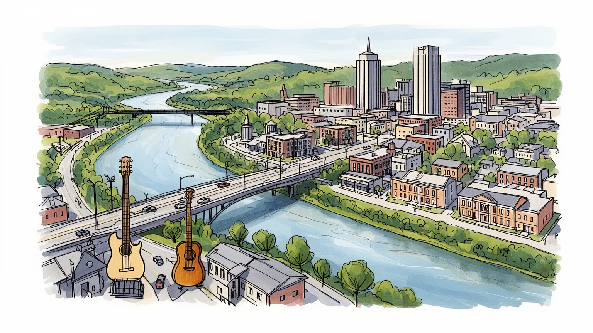
テネシー州都のナッシュビルは、州議会、大学病院、教会、業界団体が近く、南部内陸の政策と雇用を結びます。カンバーランド川、州間高速道路、空港が、国内の移動網へ街を接続し、州全体の判断を集めています。
音楽出版、ライブ運営、録音、観光に加え、医療経営、大学、物流、建設、飲食、ホテルが都市を動かします。看護、介護、清掃、厨房、配送、警備、路上演奏の仕事が成長を支え、夜勤も多い街です。学生も働きます。
教会、ゴスペル、カントリー、ブルース、ロック、インディー、大学文化、公民権運動の記憶が重なります。信仰は礼拝、慈善、教育、投票、地域活動を通じて、都市の声と祝祭を形作ります。地元ラジオとSNSも響きます。
ブロードウェイの夜は観光の顔ですが、住民には家賃、渋滞、洪水、学校、医療、郊外移動が日常の論点です。観光収入が増えるほど、静けさ、労働条件、住宅の手頃さが問われる街です。家族と高齢者も暮らしています。
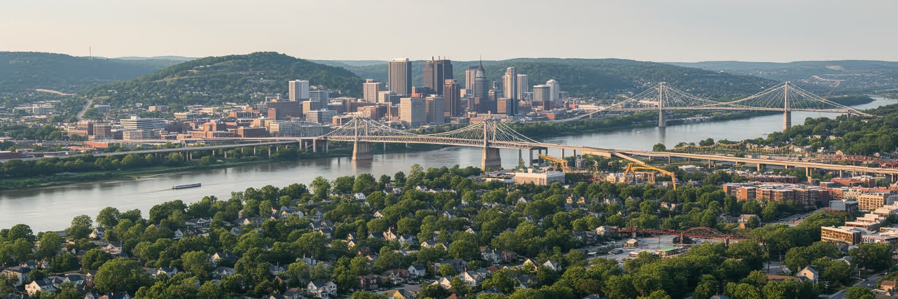
ナッシュビルの地図は、カンバーランド川の曲線を中心に読むと分かりやすくなります。川は渡河点、倉庫、製粉、商業、鉄道、橋の位置を決め、現在もダウンタウンの輪郭とイベント空間を形作っています。川沿いの低地には水辺公園、道路、ニッサン・スタジアムが集まり、テネシー・タイタンズの試合日には橋を渡る人波とブロードウェイから漏れる音が重なります。少し離れると丘陵の住宅地、大学、病院、教会が階段状に広がり、湿気、揚げ物の匂い、楽器店の木と金属の匂いまで街の記憶に混ざります。この高低差は景観の個性であると同時に、洪水、排水、道路建設、住宅価格の差にもつながります。ナッシュビルは海港ではありませんが、内陸の河川都市として南部と中西部を結ぶ位置にあり、州間高速道路と空港がその役割を引き継ぎました。橋のたもとや河岸を歩くと、古い工業地、集合住宅、スポーツ施設、観光客向けの回遊路が短い距離で並びます。川に近い土地ほど再開発の期待が集まりますが、浸水や保険、避難路の問題も抱えます。夏の夕立の後には舗装の熱と川風が混ざり、同じ水辺が散歩道、避難経路、イベント会場へ表情を変えます。川音も近く届きます。水辺を公共空間に変えるほど、都市は景観、治安、災害対応、試合やコンサート時の交通規制を一体で考える必要があります。
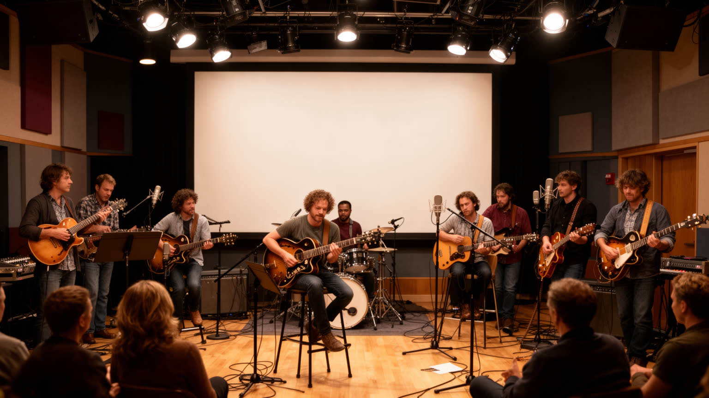
ナッシュビルを「ミュージック・シティ」と呼ぶとき、その中身はカントリーだけではありません。グランド・オール・オープリー、カントリー音楽の殿堂、ブロードウェイのホンキートンク、ミュージック・ロウの録音室に加え、ブルース、ゴスペル、ロック、インディー、教会合唱、学生バンド、ローカルラジオが一つの音の生態系を作っています。ソングライターはカフェや小さな会場で曲を試し、路上演奏者は観光客の流れを読み、演奏者はチップと長い夜の勤務に支えられます。曲がヒットするまでには共同作曲の部屋、デモ録音、出版社との契約、ラジオ局、SNS動画や配信の戦略、ツアーの手配があり、多くの小企業が連鎖に関わります。観光客が聴く一曲は、南部の教会、黒人音楽、白人労働者文化、現代ポップの混合でもあります。CMA Festの時期には街全体が巨大な舞台になり、昼の無料ステージから夜のバーまで音が途切れません。グランド・オール・オープリーの格式と小さな地下会場の実験性が同居する点に、この街の厚みがあります。音楽は都市のブランドであると同時に不安定な労働でもあります。家賃が上がると若い作り手の住む場所が遠のき、観光向けの音が増えると実験的な場が狭くなります。都市が本当に音楽を支えるなら、会場だけでなく、安く住める部屋、練習場所、移動手段、医療保険の問題も見なければなりません。
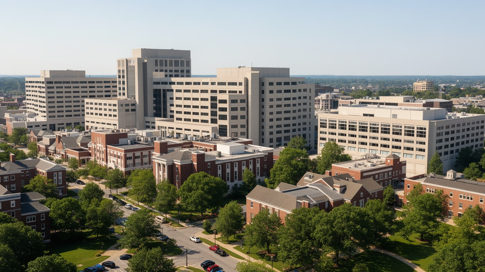
観光客の目には音楽都市として映るナッシュビルですが、地域経済を深く支えるのは医療と大学です。ヴァンダービルト大学と医療センター、メハリー医科大学、ベルモント大学、フィスク大学などは、研究、診療、教育、雇用を通じて都市の知的基盤を作っています。病院経営、医療サービス、保険、ヘルスケア企業の集積は、看護師、医師、研究者だけでなく、介護、検査、受付、清掃、給食、警備、搬送、患者家族の宿泊を含む広い労働圏を生みます。大学は学生を呼び込み、賃貸住宅、書店、カフェ、フードホール、バス路線、文化イベントを動かす一方、周辺地価を押し上げる力にもなります。ヴァンダービルトのスポーツはキャンパスを地域の週末行事に変え、学生、卒業生、近隣の店を結びます。歴史的黒人大学の存在は、公民権運動や専門職育成の記憶とも重なります。同時に、医療へ届きにくい住民、夜勤で子どもの世話に苦労する世帯、高齢者の通院や介護を支える家族もいます。臨床実習の学生、夜明け前に出勤する清掃員、救急入口で家族を待つ人が、観光地とは別の時間で街を動かしています。医療と大学は地域の誇りである一方、専門職と低賃金職の差を同じ職場内に抱えます。病院の拡張や研究棟の建設が街を強くするほど、周辺の交通、住宅、食堂、保育も一緒に整える必要があります。
ナッシュビル観光の中心には、ブロードウェイのネオン、ホンキートンクの夜、博物館、川辺のイベント、グランド・オール・オープリー、スポーツ観戦があります。週末には独身最後の旅行、音楽ファン、テネシー・タイタンズ、ナッシュビル・プレデターズ、ナッシュビルSCのサポーターが集まり、ホテル、短期賃貸、飲食、送迎、警備、清掃が夜遅くまで動きます。氷上の試合後に歓声が流れ、サッカーのチャントが別の地区へ広がり、CMA Festや大晦日のイベントでは街全体の音量が変わります。ブロードウェイでは何軒ものバンドの音が重なり、派手なブーツ店、土産物店、屋上バー、深夜のフードホールは、観光の楽しさと消費の速度を同時に見せます。店の灯りも夜更けまで残ります。このにぎわいは税収と雇用を生む一方、住民には騒音、混雑、飲酒トラブル、家賃上昇、歩道の占有として現れます。観光客の動線は中心部に集中しますが、その宿泊施設で働く人は郊外から通い、深夜に帰る交通手段を探します。都市が観光の音量を上げるほど、公共空間の管理、警察の対応、地域店の持続性を細かく調整する力が必要になります。昼の博物館や家族向け施設と、夜の飲酒観光は同じ都市にありますが、必要な交通、安全、清掃、音量の管理は異なります。観光を長く続けるには、稼げる夜だけでなく、翌朝の街を誰が整えるのかまで含めて考える必要があります。
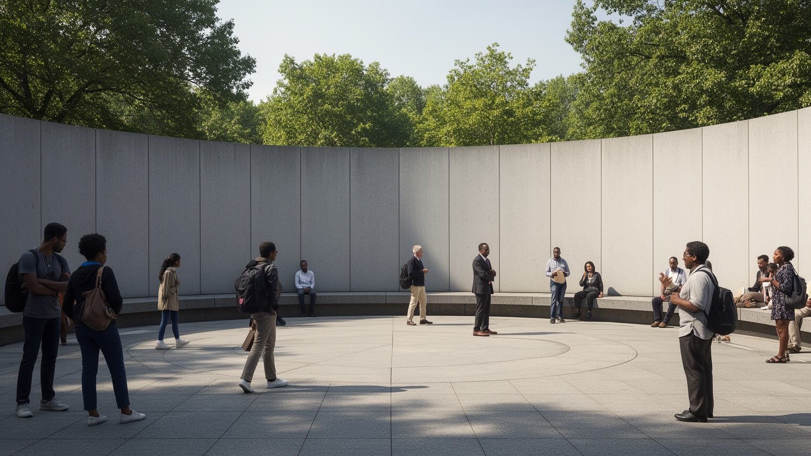
ナッシュビルは音楽の都市であると同時に、公民権運動の都市でもあります。1960年のランチカウンター座り込みでは、フィスク大学、アメリカン・バプテスト神学校、テネシー州立大学などの学生や若い活動家が、非暴力直接行動によって人種隔離に抗議しました。ダウンタウンの商業空間は、買い物の場所であるだけでなく、誰が同じ席に座れるのかを問う政治の舞台になりました。座り込みは突然生まれた抗議ではなく、教会での礼拝、訓練、学生寮での議論、地域の支援に支えられました。現在もJuneteenthの催し、教会の合唱、慈善食堂、投票登録、学校の式典が、自由と記憶を生活の中へ戻しています。この記憶は博物館や記念表示に収まるものではなく、教育、投票権、警察、住宅、医療格差をめぐる現在の課題にも続いています。南部都市としてのナッシュビルを読むには、教会、大学、黒人コミュニティ、学生組織、商業地区がどのように結びついたかを見る必要があります。現在の再開発地や大学周辺を歩くと、この記憶が地価や人種分布の変化と重なっていることが分かります。公民権の歴史は観光案内の一項目ではなく、図書館、教室、教会、投票所、住宅街で受け継がれる都市の倫理です。音楽を楽しむ訪問者も、この街の公共空間がどのような闘いで開かれたのかを意識すると、見え方が変わります。
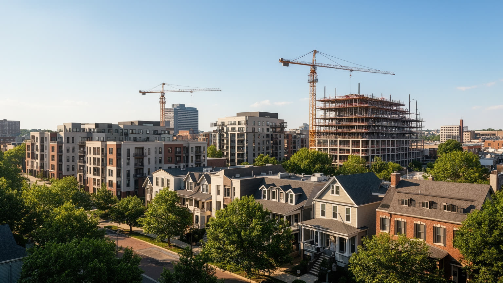
近年のナッシュビルは人口流入と企業移転で急速に成長し、住宅地の地図も大きく変わりました。古い労働者地区や黒人コミュニティの近くに新しい集合住宅、タウンハウス、短期賃貸、カフェ、ブティックが入り、土地価格と家賃が上がっています。郊外では一戸建て開発が広がり、広い家を求める世帯を受け入れる一方、車移動、渋滞、学校区、上下水道、緑地の消失が課題になります。成長は雇用と税収をもたらしますが、長く住んできた住民にとっては固定資産税、家賃、生活費の上昇として重くのしかかります。音楽家、サービス労働者、学生、医療職の若手が中心部近くに住みにくくなると、都市の文化と労働の基盤も弱まります。子どもの通学、高齢者の買い物や通院、夜勤後の帰宅を考えると、住宅の不安は単なる供給不足ではなく、毎日の移動と安心に関わります。新しい住宅は密度を高める一方、歩ける店、バス、学校、保育、公共空間が伴わなければ暮らしの質は上がりません。ショッピング地区の近くに住める人と、郊外から車で通う人の差も広がります。短期賃貸が増える地区では隣人の入れ替わりが激しくなり、地域の見守りも弱くなります。手頃な住宅を確保する政策は、音楽や観光の魅力を守るためにも必要です。成長を歓迎する都市ほど、賃貸補助、混合所得住宅、歩ける近隣づくりを中心に置く必要があります。
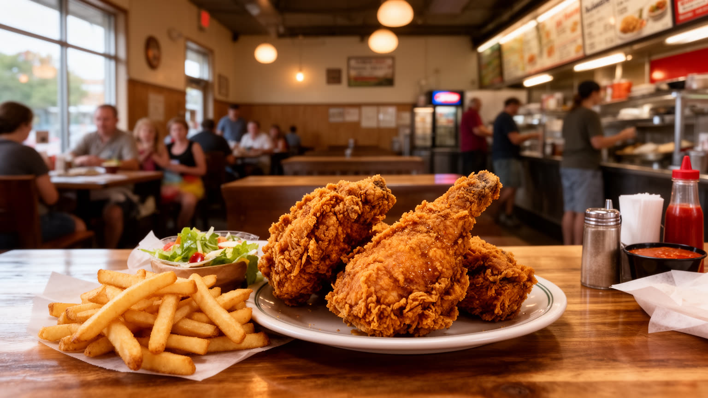
ナッシュビルの食文化は、ホットチキンの辛さだけで語り切れません。南部料理の肉、豆、青菜、コーンブレッド、バーベキュー、ミート・アンド・スリーの食堂は、労働者の昼食や教会後の家族の食事と結びついてきました。ホットチキンは黒人コミュニティの店から広がり、いまでは観光客が列を作る名物になっていますが、その背景には家族経営、レシピの継承、近隣の常連客があります。ファーマーズマーケットでは地元野菜、焼き菓子、花、移民の屋台が並び、フードホールでは学生、医療労働者、観光客が同じ昼時を共有します。近年はクルド、メキシコ、中東、東南アジアなどの移民の食も増え、郊外の商店街や小さな市場が都市の味を広げています。中心部では揚げ物の匂いがライブの音と混ざり、レコード店やブーツ店を回るショッピングの休憩で南部の皿を選ぶ人もいます。日曜の教会帰り、試合前の軽食、夜勤明けの朝食など、食事の時間帯も街の生活を映します。観光向けの派手な皿と、住民が通う日常の食堂を分けて見ると、食は南部の記憶と新しい移民社会が交わる場所だと分かります。人気店が観光資源になるほど、行列や価格は変わり、昔からの客が入りにくくなることもあります。厨房で働く人、食材を運ぶ人、皿を洗う人、深夜に店を閉める人の仕事も食文化の一部です。名物料理を楽しむほど、その味を続ける家族経営や移民労働の条件まで見える都市になります。
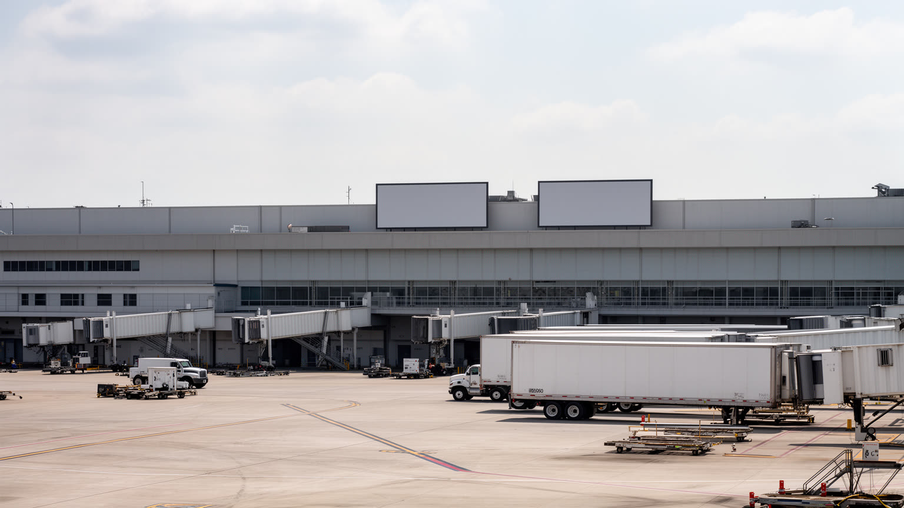
ナッシュビルの成長を支えるもう一つの基盤は、空港、高速道路、倉庫、配送網です。ナッシュビル国際空港は観光客とビジネス客を運び、音楽イベント、医療会議、大学訪問、企業出張を都市へ流し込みます。CMA Festや大規模試合の週には、楽器ケース、音響機材、チーム用品、ホテルのリネン、レストランの食材までが同じ物流網に乗ります。州間高速道路はアトランタ、ルイビル、メンフィス、セントルイス方面へ伸び、内陸の物流拠点として倉庫、トラック輸送、配送センターを集めています。これらの施設は都市の表舞台には出にくいものの、病院の医療品、楽器店の商品、建材、オンライン注文を支える不可欠な役割です。一方で、物流の拡大は交通量、大気汚染、騒音、低賃金労働、郊外の土地消費を伴います。配送センターや倉庫は雇用を増やしますが、勤務時間が不規則で、公共交通だけでは通いにくい場所に置かれることもあります。観光労働者や医療スタッフが同じ道路で通勤するため、渋滞は単なる不便ではなく遅刻、保育、通院へ影響します。空港拡張や高速道路整備を評価するには、到着する人の便利さだけでなく、周辺で働き暮らす人の負担も見る必要があります。会議都市としての成長は、搬入、ケータリング、清掃、警備を同時に増やします。物流は地味ですが、都市の速度と環境負荷を決める重要なインフラです。
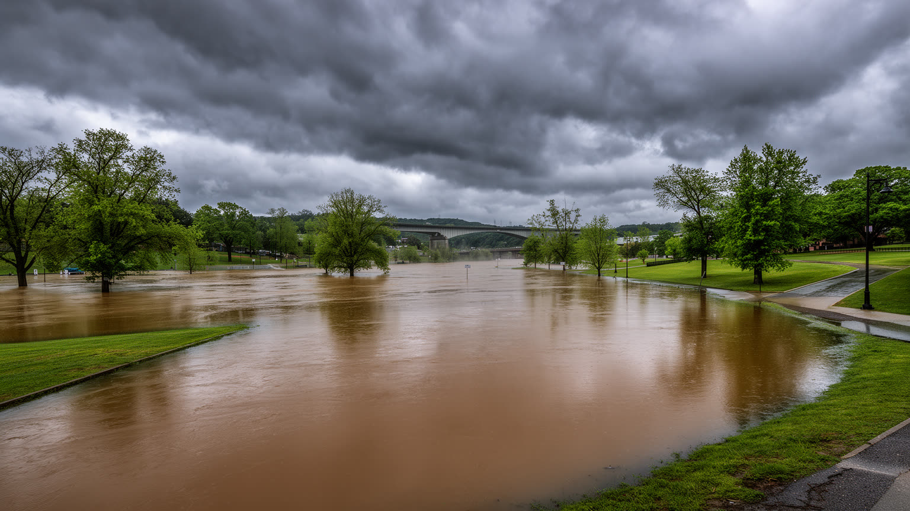
ナッシュビルの気候は湿潤で、夏は蒸し暑く、雷雨や激しい雨が都市生活に影響します。夕方に空が暗くなり、川沿いの湿気が濃くなると、屋外ステージ、スポーツ観戦、観光馬車、配達、建設現場の動きも変わります。2010年の大洪水は、カンバーランド川と支流が都市をどれほど脆くできるかを示しました。ダウンタウン、住宅地、道路、音楽施設、倉庫、観光施設が浸水し、川沿いの再開発と防災の関係が改めて問われました。洪水対策は堤防や排水だけではなく、どこに住宅を建てるか、低所得世帯が危険地に取り残されないか、災害後に保険や修理へ届けるかという社会の論点でもあります。豪雨や暑さが強まれば、屋外労働者、子ども、高齢者、車を持たない住民、古い住宅に住む人ほど影響を受けます。暑さはライブ会場の行列、学校の運動、電力需要にも関わります。雷雨で試合や野外ライブが中断されると、観客だけでなく警備、清掃、売店、交通整理の働き方も変わります。住民は雨雲の速さにも敏感です。緑地や日陰が少ない地区では、同じ気温でも体感の負担が大きくなります。水と暑さへの備えは、景観整備ではなく生活を守る制度として考える必要があります。雨水を受け止める公園、浸水しにくい住宅、停電時の避難先、暑さを避けられる公共施設は、派手ではなくても命に関わる都市基盤です。
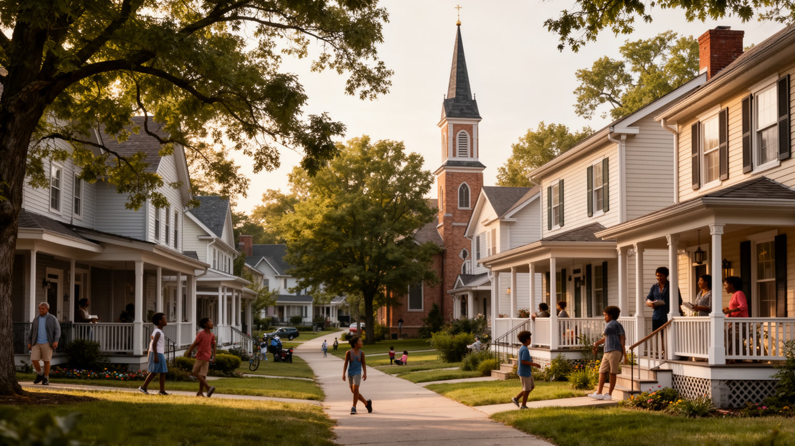
ナッシュビルの日常は、観光客が歩く中心部だけでなく、イースト・ナッシュビル、ジャーマンタウン、ノース・ナッシュビル、ザ・ガルチ、ミュージック・ロウ、郊外の住宅地に分かれて現れます。古い教会、学校、理髪店、食堂、ライブ会場、大学寮、新しいマンション、楽器店、ショッピングの通りが近接し、地区ごとに生活の速度が異なります。イースト側では独立系の店やインディー音楽家の暮らしが語られ、ノース側では歴史的黒人コミュニティと大学の記憶が残り、中心部周辺では再開発が急速に進みます。住民にとって重要なのは、観光地までの近さだけではありません。家賃、学校、買い物、病院、歩道、バス、治安、近所の顔見知りが生活の質を決めます。歩道が途切れる通り、バスの本数が少ない地区、古い住宅の修理費、教会の食料支援、学校区への期待は、観光地図には載りにくい日常です。新しい店が増えることは便利さを生む一方、昔の住民が自分の街だと感じにくくなる瞬間もあります。朝の通学、昼の高齢者の通院、夕方の買い物、夜のライブ帰りは同じ道路を別々のリズムで使います。近隣の祭り、学校行事、フードパントリー、庭先の会話、ローカルメディアが伝える高校スポーツや教会行事は、急成長の中で人をつなぎ直す小さな制度です。中心部の派手さから離れるほど、ナッシュビルが生活都市であることが見えてきます。
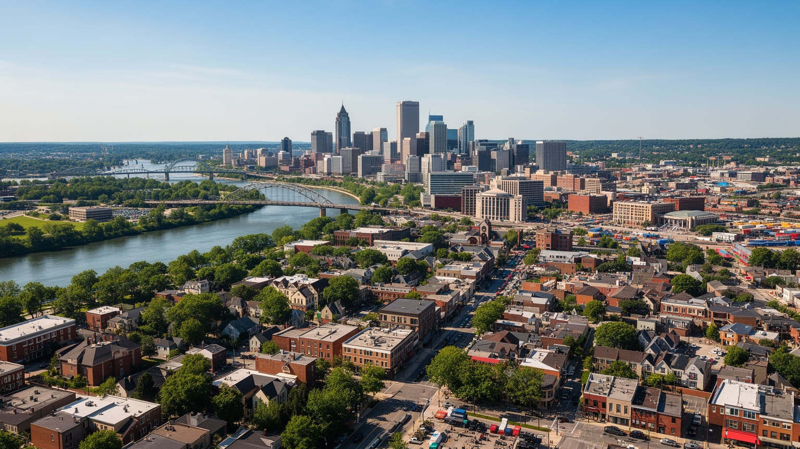
ナッシュビルを読むとき、音楽の看板は入口であって結論ではありません。カンバーランド川の地形、州都としての制度、大学と病院、音楽出版、ホンキートンクの夜、物流、住宅成長、公民権の記憶、移民の食、洪水リスクが重なって、一つの南部都市を作っています。華やかなライブの背後には、看護師、学生、清掃員、配送員、ホテル労働者、ソングライター、路上演奏者、教会のボランティア、郊外から通う家族がいます。ブロードウェイの音、オープリーの格式、CMA Festの熱気、スポーツの歓声、地元ラジオの声は、同じ都市の別々の入口です。成長は都市に自信を与えますが、家賃上昇、交通、格差、歴史的地区の変化、気候災害への備えを避けては通れません。ナッシュビルの強さは、音楽を経済に変える力だけでなく、南部の記憶と新しい移住者を同じ都市空間で受け止めている点にあります。ホットチキンの辛さ、教会の歌声、川沿いの湿気、楽器店の匂い、試合帰りの人波は、観光の飾りではなく生活の断片です。川沿いの再開発、大学病院の拡張、空港の混雑、郊外住宅の増加は、それぞれ別の話に見えて同じ成長の表情です。都市の魅力を長く保つには、手頃な住まい、公共交通、歴史の継承、災害への備え、移民と黒人コミュニティの生活を支える仕組みが欠かせません。南部の伝統を商品にしながら、南部の不平等をどう変えるのか。その問いが現在のナッシュビルをよく示しています。